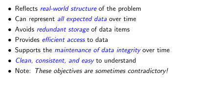
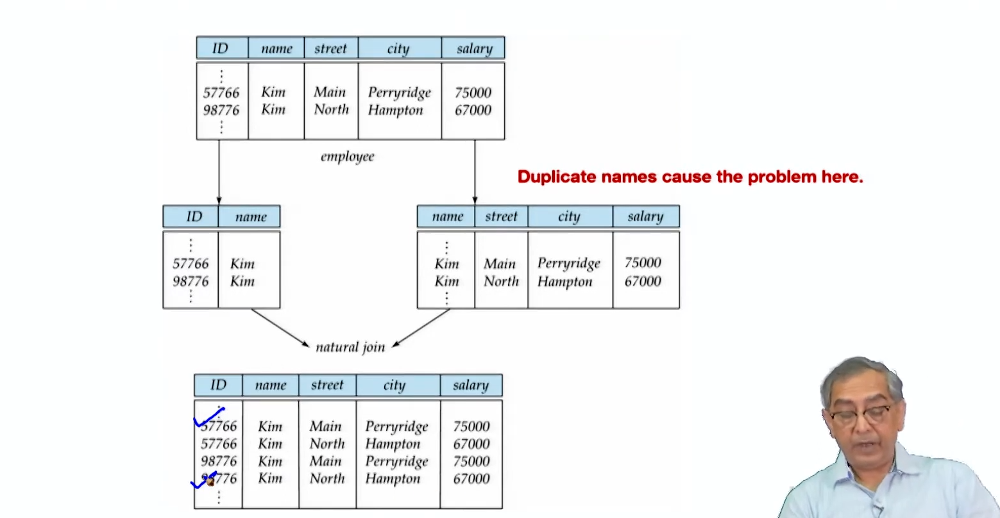

Lecture 5.1 - Relational Database Design1
Summary This module focuses on principles of relational database design. It emphasizes:
Features of Good Design:
- Reflects real-world structure
- Accommodates future data additions
- Avoids redundancy
- Provides efficient data access
- Maintains data integrity

Redundancy and Anomaly:
- Redundancy (duplicate data) leads to anomalies:
- Insertion: Can't add data if unknown data is required
- Deletion: Losing unrelated information when deleting records
- Update: Inaccurate changes due to multiple occurrences of data
Decomposition:
- Decomposing relations into smaller ones removes redundancy and minimizes dependencies among attributes.
- Good decomposition ensures data preservation and integrity.
functional dependency : dept name → building, budget In inst_dept, because dept_name is not a candidate key, the building and budget of a department may have to be repeated. ◦ This indicates the need to decompose inst dept
Lossy Decomposition

Lossless Join Decomposition is a decomposition of a relation R into relations R1 , R2 such that if we perform natural join of two smaller relations it will return the original relation
Atomic Domains and First Normal Form (1NF):
- Atomic domains consist of indivisible elements.
- 1NF requires relations with atomic domains and each attribute holding a single value.
- Non-atomic values complicate storage and encourage redundancy.
Atomic Domains
An atomic domain refers to the indivisibility of data within a domain. In the context of databases, it means that the value in a particular field is indivisible and represents the smallest unit of data. Each attribute in a table should contain atomic (indivisible) values.
- Example of Atomic Values:
123 Main St,John Doe,01/01/2020- Example of Non-Atomic Values:
123 Main St, Apt 4(multiple pieces of information in one field)John and Jane Doe(multiple names in one field)
First Normal Form (1NF)
A relation (table) is said to be in the First Normal Form (1NF) if it satisfies the following conditions:
- Atomicity: All the values in the database are atomic (indivisible).
- Uniqueness of Rows: Each row in the table must be unique, meaning no two rows can be identical.
- Uniqueness of Column Names: Each column should have a unique name.
- No Repeating Groups: Each table should contain only one value per cell (intersection of a row and a column), and columns should not contain sets or lists of values.
Examples of 1NF
Non-1NF Table:
| StudentID | Name | Courses |
|---|---|---|
| 1 | John Doe | Math, Science |
| 2 | Jane Smith | English, History, Math |
In the above table:
- The
Coursescolumn contains multiple values, which violates the atomicity rule.
1NF Table:
| StudentID | Name | Course |
|---|---|---|
| 1 | John Doe | Math |
| 1 | John Doe | Science |
| 2 | Jane Smith | English |
| 2 | Jane Smith | History |
| 2 | Jane Smith | Math |
In this 1NF table:
- Each cell contains only one value, adhering to the atomicity requirement.
- Each row is unique, and there are no repeating groups within any cell.
Achieving 1NF
To transform a table into 1NF:
- Remove Repeating Groups: Ensure that each column contains only a single value.
- Create Separate Tables for Multivalued Attributes: If necessary, split the multivalued attributes into separate rows or tables.
- Ensure Primary Keys: Define primary keys to uniquely identify each row in the table.
By adhering to these principles, a database can be designed to comply with the First Normal Form, thus ensuring data integrity and facilitating easier querying and maintenance.